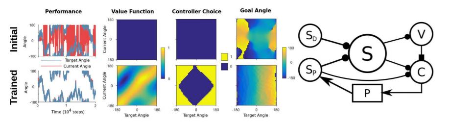

When you reach to press a button most of the hard work of control is swept under the carpet. Rather than having to think 'contract left anterior deltoid, relax right bicep etc. etc.' you just think 'press the button.' In fact, even the process of reaching requires the careful control of tens of muscle but it seems effortless. This level of effortlessness far exceeds the current artificial equivalents. We tried to copy some of this effortless motor control in a very simple setup, using a controller that is able to apply (simulated) torques to a (simulated) pendulum.
Our controller had two levels, like two managers. The higher level manager set goals for the lower level manager to fufill, for example by saying 'get the pendulum to 90 degrees', but it didn't worry about how to get there. The lower level manager took the goal set by its boss and exerted torques in order to reach it. So the higher level manager is a bit like you thinking 'press the button', while the lower level manager is like your subconscious that performs the difficult task of choosing which muscles to contract to reach its goal.
We were able to adapt modern learning algorithms to this two leveled task, and we hope that future extensions of this scheme will prove useful in both improved artificial control as well as shedding light on how your body achieves the fine motor skills it is capable of - which could perhaps help in medical cases where patients lose motor control.
Our setup used bio-plausible reinforcement learning to learn both the goal angle (fourth column in the image below), and which controller to use in each region (third column). Hence, we show a level of hierarchical control in a non-monotonic setup, a possible starting point for future explorations of hierarchical reinforcement learning.
Read the paper here.
This line of work has since been extended by Sergio, the post-doc I was lucky to work with, into a full-blown model of arm-reaching with neurons here!
Figure 1: On the right, the actor-critic architecture that chose an angle to track to. On the left, a comparison of initial and final control. At the beginning the controller struggles: the red line does not track the blue, whereas by the end it is tracking closely. The three diagrams show the choices made by the controller, in this case an optimal policy that tracks from current to desired angle.